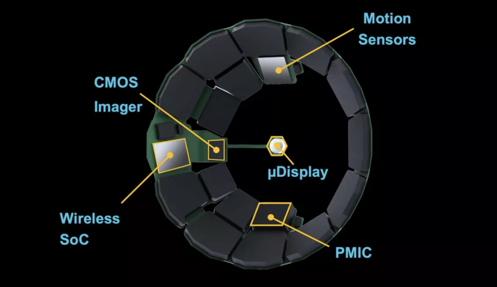
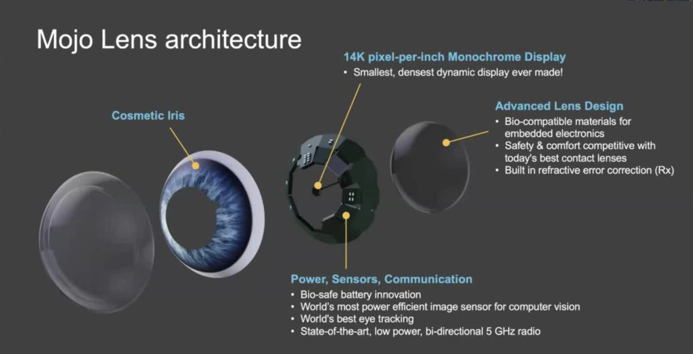
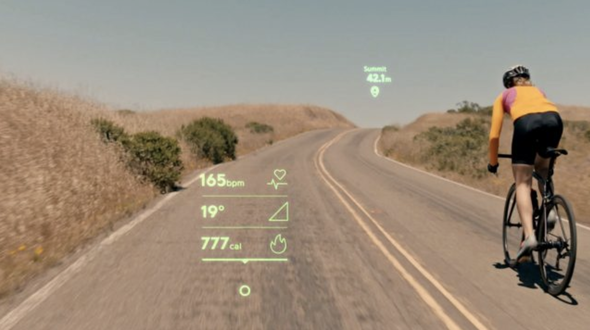

Contact lenses displays - the computing platform for mobility
In the past three decades, we witnessed the PC era, the rise of the Internet, the smartphone era, and now the augmented reality/virtual reality (AR/VR) era. Current AR/VR devices are still bulky, intrusive, and uncomfortable to wear. Also, these types of devices need to be used in a controlled environment. They are not good while “on the move” or performing sports activities.
AR contact lenses represent the missing link between a laptop and AR/VR glasses, bringing the augmented experience to a new scenario. These lenses will provide the information you need without distraction, augmenting human capabilities.
Improvements to electronics miniaturization, materials, batteries, microdisplays are unlocking this new scenario.
Source: Mojo Vision
Source: Society of Photo-Optical Instrumentation Engineers (SPIE)
